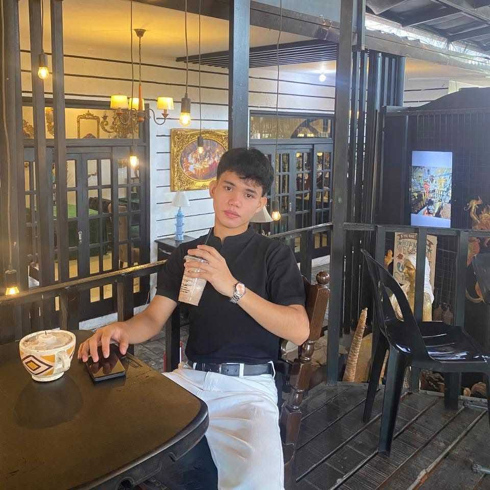

Build a strong foundation
Practice coding regularly and understand the logic behind each program instead of only copying code.
A LITTLE ABOUT ME
This page is about who I am as a student and the kind of technology professional I want to become.

STUDENT PROFILEBSCS 1A Student
Hello! I am a Bachelor of Science in Computer Science student who is learning the foundations of computing and programming. I enjoy exploring how software works and how technology can be used to solve everyday problems.
I am interested in becoming a web developer and learning more about game development and cybersecurity. I want to build useful, user-friendly websites first, then continue exploring other areas of IT as my skills grow.
MY NEXT STEPS
Practice coding regularly and understand the logic behind each program instead of only copying code.
Make small websites and beginner programs that help me apply what I learn in class.
Improve my communication, discipline, and confidence when working with other people.